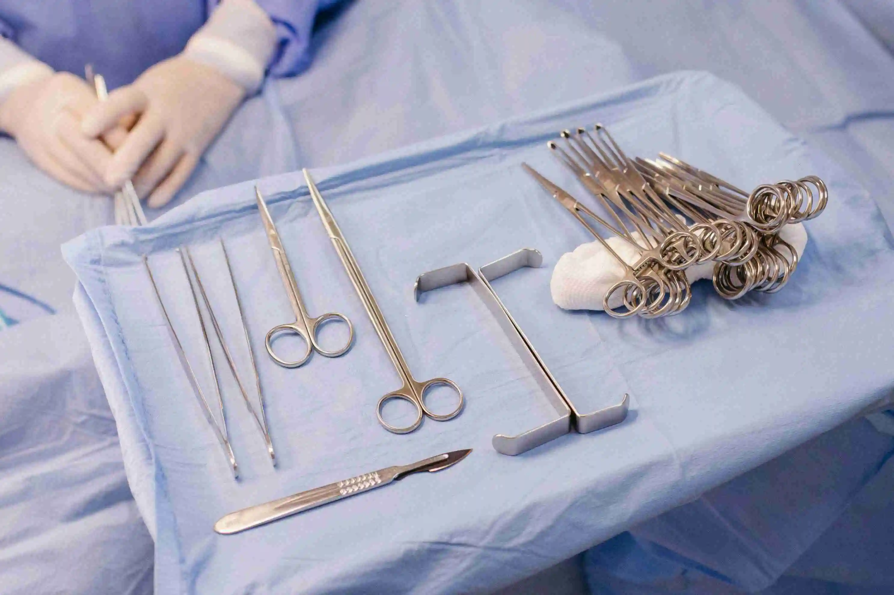
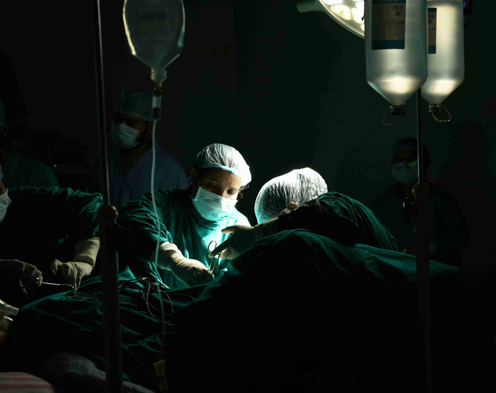

Prepare for surgery safely with expert tips on fasting, documents, hospital bag essentials, and recovery planning from Gani Hospital Ramanathapuram.

Whether you are having a minor procedure or major operation, proper planning is essential. Good pre-surgery preparation helps reduce delays, improves patient safety, and supports faster healing after treatment.
Many patients feel nervous before surgery. Knowing what to expect, what to carry, and how to prepare can make the experience easier and more comfortable.
At Gani Hospital, Ramanathapuram, our experienced doctors and surgical team guide every patient from admission to discharge with compassionate and safe care.
Proper before surgery preparation helps reduce anxiety, improves patient safety, and prevents last-minute delays. Keeping reports ready, following instructions, and arriving on time can make admission smooth and stress-free.
Well-prepared patients often recover faster because their body and mind are ready for treatment.
Always follow your surgeon’s instructions regarding medicines, fasting, test reports, and arrival time.
Blood tests, ECG, X-ray, scan, urine tests, or specialist clearance may be needed depending on your condition.
Inform your doctor about diabetes, BP, asthma, allergies, thyroid problems, heart disease, or previous surgeries.
Tell your doctor about tablets, injections, supplements, herbal products, or blood thinners.
Stopping smoking and alcohol before surgery can improve anesthesia safety and wound healing.
Good rest the previous night helps your body stay calm and prepared.
Plan for a family member or friend to accompany you and assist after discharge.

Avoid bringing expensive jewelry, valuables, or unnecessary cash.
Many surgeries require fasting before anesthesia. This means no food or drink for a specific time before your procedure.
Incorrect fasting may delay or cancel surgery for safety reasons.
Wear loose and comfortable clothes on surgery day. Avoid makeup, nail polish, jewelry, watches, and contact lenses unless approved. Keep valuables safely at home and tie long hair neatly.
Comfortable clothing makes changing easier before and after surgery.
Before your procedure, ask your doctor about the type of surgery, expected duration, hospital stay, anesthesia, recovery time, and possible risks.
You should also ask when you can eat, walk, drive, return to work, and what warning signs to watch after discharge.
Early recovery depends on proper medicines, wound care, hydration, and enough rest. Gentle walking may be advised to improve circulation and prevent stiffness.
Eat protein-rich foods, drink fluids, and attend follow-up appointments. Report fever, swelling, pain, bleeding, or vomiting immediately.
Seek immediate medical care if these symptoms occur.
At Gani Hospital, we provide trusted patient-focused surgical care with experienced doctors, trained nursing staff, modern operation theatre support, and dedicated post-operative monitoring.
For more detailed medical information and patient guidance, you can refer to these trusted resources:
Good before surgery preparation can make treatment safer, smoother, and less stressful. Bring the right documents, follow fasting rules, ask questions, and carefully follow doctor instructions.
Choosing an experienced hospital improves confidence and recovery outcomes.
For trusted surgery care in Ramanathapuram, patient guidance, and safe treatment, choose Gani Hospital.
Can I drink water before surgery?
Only if your doctor specifically allows it.
Should I stop regular medicines?
Some medicines need adjustment. Always ask your doctor.
What if I ate by mistake before surgery?
Inform hospital staff immediately.
How early should I arrive?
Usually 1–2 hours early or as instructed.
Can family stay with me?
Hospital policy may vary. Confirm during admission.
Is fear before surgery normal?
Yes, it is common. Speak with your doctor for reassurance.